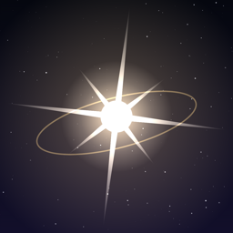

Y³ StudioStarlog
공부한 시간만큼 밤하늘의 별자리를 하나씩 밝히는 집중 타이머. 딸과 아빠가 함께 만든 앱입니다.
자주 묻는 질문
아이폰과 아이패드에서 이어서 쓸 수 있나요
같은 Apple 계정으로 iCloud에 로그인되어 있으면 진행 상황이 자동으로 이어집니다. 따로 회원가입이나 로그인을 하지 않습니다.
화면을 꺼도 시간이 흐르나요
네. 집중 중에 화면을 끄거나 다른 앱을 써도 시간은 계속 흐르고, 쉬는 시간과 끝나는 때는 알림으로 알려 줍니다.
별빛 회원 (구독)
무료로 집중 타이머, 잘 알려진 별자리 18개, 기본 원소, 공부 기록을 쓸 수 있습니다. 별빛 회원은 88개 별자리 전체, 무거운 원소(구리·은·금 등), 이번 주 리포트, 배경음 3가지를 씁니다.
- 1개월 ₩1,000 · 1년 ₩10,000 (자동 갱신)
- 처음 구독하면 7일 무료 체험. 체험이 끝나면 고른 기간마다 Apple 계정으로 결제됩니다.
- 갱신 24시간 전까지 아이폰 설정 › Apple 계정 › 구독에서 언제든 해지할 수 있습니다.
- 기기를 바꾸면 메뉴 › 별빛 회원 › 구매 복원을 누르세요.
문의
y3_studio@naver.com · 개인정보처리방침 · 이용약관 (Apple 표준 EULA)
English
Starlog is a focus timer that lights up the constellations of the night sky as you study. Made together by a daughter and her dad.
iPhone and iPad
Progress syncs automatically through iCloud on devices signed in to the same Apple Account. There is no separate sign-up or login.
Starlight membership (subscription)
Free: focus timer, 18 well-known constellations, basic elements and study log. Members get all 88 constellations, heavy elements (copper, silver, gold…), the weekly report and 3 music tracks.
- ₩1,000 per month or ₩10,000 per year (or local equivalent), renewing automatically.
- First-time subscribers get a 7-day free trial; afterwards your Apple Account is charged each period.
- Cancel anytime in Settings › Apple Account › Subscriptions at least 24 hours before renewal.
- On a new device, tap Menu › Starlight member › Restore purchases.
Contact: y3_studio@naver.com · Privacy Policy · Terms of Use (Apple standard EULA)